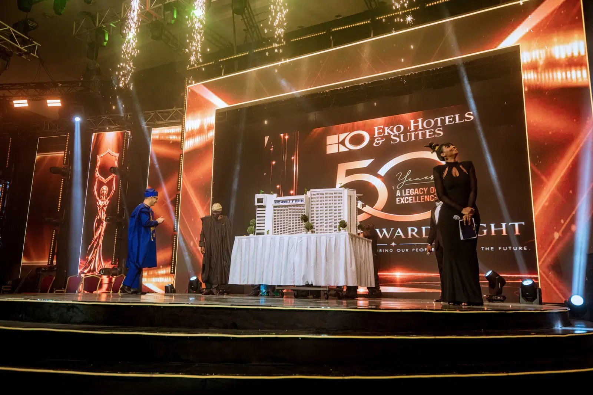

EKO HOTELS AT 50: THE NIGHT AFRICAN HOSPITALITY STOPPED ASKING FOR A SEAT AT THE GLOBAL TABLE

Eko Hotels & Suites marked its 50th anniversary with a gala at the Eko Convention Centre in Lagos on October 2, 2026. The Legacy Gala & Awards brought together more than 1,000 guests from business, government, entertainment, culture and society, including Lagos State Governor Babajide Sanwo-Olu and Deputy Governor Kadri Obafemi Hamzat. Music performances featured Wyclef Jean and Flavour.
The anniversary programme also included the Africa Legacy Summit, held earlier in May. It brought together policymakers, scholars, diplomats, tourism professionals, business leaders, creatives and young Africans to discuss culture, hospitality, tourism and travel. Topics included investment, sustainability, innovation, youth participation and ways to translate Africa’s cultural assets into economic opportunities.
The celebrations highlighted the hotel’s development beyond accommodation, including experiences and events such as Tropical Christmas Wonderland, Theatre @ Eko Hotels and Hakuna Matata Theme Park. The anniversary material presented these activities as examples of how hospitality venues can support cultural production and encourage travel, while generating opportunities across sectors such as entertainment, transport and food services.
The event also recognised the employees whose work has sustained the hotel over five decades, from housekeeping and engineering to security, events and administration. Its leadership team includes Managing Director Ghassan Faddoul and General Manager Danny Kioupouroglou. The anniversary framed the hotel’s next phase around maintaining its relevance through continued investment in hospitality, cultural experiences and destination development.
Source: Vanguard